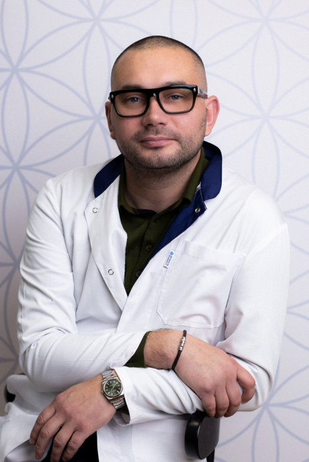
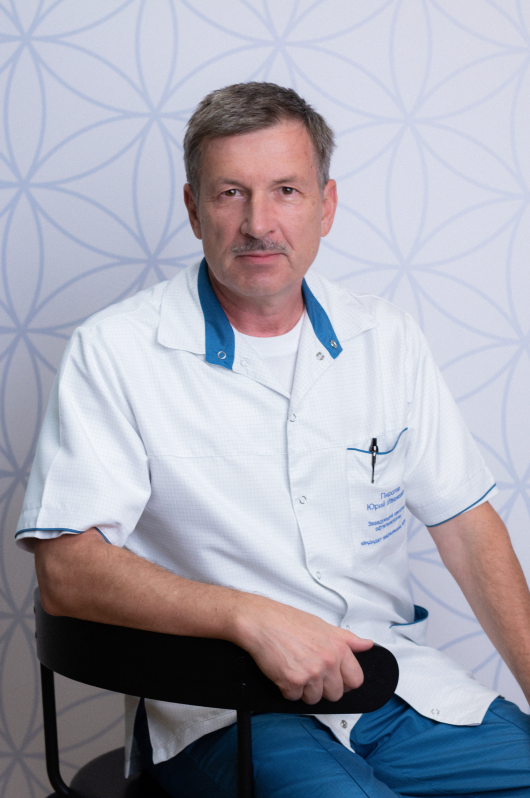
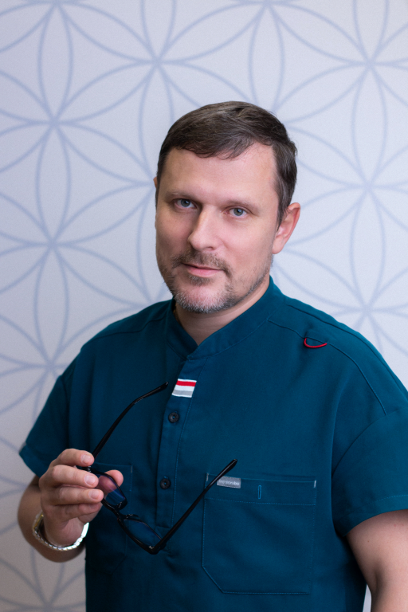
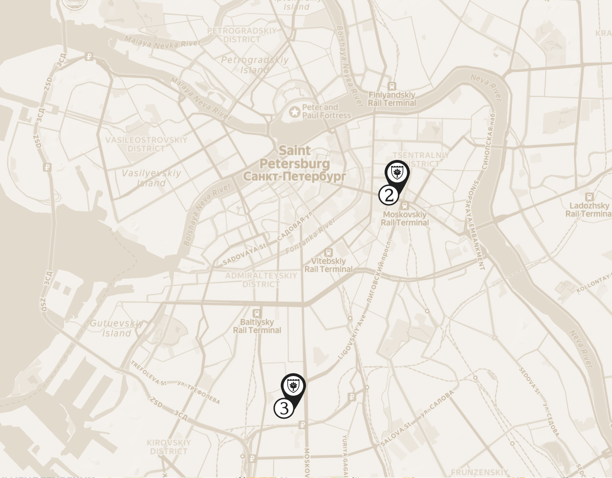

Системный
подход
Организм рассматривается как единая взаимосвязанная система, где важна работа всех органов и процессов.
Комплексный подход к сохранению здоровья, раннему выявлению рисков и улучшению качества жизни на каждом этапе.
Превентивная медицина направлена на сохранение здоровья и предупреждение заболеваний ещё до появления выраженных симптомов. Такой подход позволяет выявлять риски на ранних этапах, корректировать образ жизни и снижать вероятность развития хронических состояний.
В центре внимания — не отдельный симптом, а общее состояние организма, его ресурсы и способность к восстановлению.
Организм рассматривается как единая взаимосвязанная система, где важна работа всех органов и процессов.
Фокус на устранении причин
нарушений, а не только на
работе
с симптомами.
Активная профилактика и ранняя
диагностика
заболеваний и патологических
состояний.
Динамический контроль изменений
на фоне терапии с
возможностью
своевременной корректировки
диагностических и лечебных схем.
Для каждого пациента разрабатывается
персональная
программа восстановления
и оздоровления с учётом возраста,
образа
жизни и особенностей
организма.
С пациентом работает команда
высококвалифицированных
врачей-
экспертов Немецкой семейной клиники.
Программы формируются индивидуально и направлены на комплексную оценку состояния организма и снижение рисков развития заболеваний.
Превентивная медицина подходит не только при наличии жалоб, но и в ситуациях, когда важно оценить состояние здоровья, уровень ресурсов организма и потенциальные риски.
С пациентами работают врачи с большим опытом в области превентивной и интегративной медицины. Команда специалистов помогает выстроить долгосрочную стратегию сохранения здоровья и активного долголетия.

Врач превентивной медицины, терапевт, кандидат медицинских наук

Врач превентивной медицины, эндокринолог, нутрициолог

Врач превентивной медицины, гастроэнтеролог, диетолог

Врач превентивной медицины, кардиолог, терапевт
Врач превентивной медицины, невролог, реабилитолог
Приём отличается большей продолжительностью и акцентом на детальный сбор анамнеза. Это позволяет предупредить развитие заболеваний и выстроить индивидуальный план сохранения здоровья на протяжении всей жизни.
Анкетирование — важный этап подготовки к приёму врача.
Оно помогает заранее собрать анамнез и уточнить информацию, чтобы на первичном приёме уделить больше времени общению и индивидуальным рекомендациям.
Опыт пациентов, которые уже прошли программы превентивной медицины в Немецкой семейной клинике.
Очень классный молодой
доктор:видно,что ему
нравится его работа. К детям без лишних
сюсюканий,но именно это и
располагает ребенка
к врачу. С
точки
зрения назначаемого лечения
тоже все
отлично-все
помогает,при этом без
лишних
препаратов.
Обратилась к Юлии Александровне как
колопроктологу. Приём прошел
комфортно,
в дружелюбной
атмосфере,
что немаловажно
при
обращении с
деликатной проблемой.
Также доктор
грамотно ответила
на все вопросы,
рассказала про
план лечения и что ... нужно делать при
возникновении...
Очень понравился прием у доктора
Кирилла
Алексеевича Смирнова.
Доктор очень
внимательно меня
выслушал,
тщательно изучил
результаты проведенных ранее
обследований. Подробно и
доходчиво
ответил
на все мои
вопросы, которых
было немало...
Второй раз делаю фгдс у Виктора
Владимировича, просто поражаюсь,
как быстро
и точно он все
делает. Я
много раз делала эту
процедуру в
других клиниках - никакого
сравнения!
Все объясняет,
делает все
профессионально.... Спасибо большое, всем рекомендую этого эндоскописта...
Выберите удобный для вас филиал. Все клиники оснащены современным европейским оборудованием и работают по единым стандартам качества.

Время работы:
с 8:00 до 22:00 (Ежедневно)
Санкт-Петербург,
Невский пр. 114-116,
(БЦ Невский Центр (Стокманн), 8 этаж, вход с ул.
Восстания)
Время работы:
с 7:30 до 22:00 (Ежедневно)
Санкт-Петербург,
пл. Чернышевского д.11 А
(вход с ул. Варшавская)
Время работы:
с 9:00 до 21:00 (Ежедневно)
Санкт-Петербург,
Невский пр. 114-116,
(БЦ Невский Центр (Стокманн), 8 этаж, вход с ул.
Восстания)
Время работы:
с 8:00 до 22:00 (Ежедневно)
Санкт-Петербург,
ул.Варшавская д.23 к. 1
Время работы:
Круглосуточно
Санкт-Петербург,
пл. Чернышевского д.11 А
(вход с ул. Варшавская)
Время работы:
с 8:00 до 21:00 (Ежедневно)
Санкт-Петербург,
пл. Чернышевского д.11 А
(вход с ул. Варшавская)